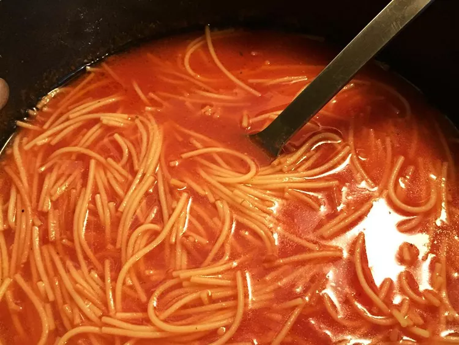

Rica(Delicious) Sopita de Fideos

This is fairly common known recipe amongst the hispanic and latin community its fairly cheap to make and it tastes very woderful,
there is versions of this soup but today we are only doing the common version of it.
Ingredients
- Water
oil
Pasta
- Knorr tomato seasoning
- garlic
- onion
Steps
- pour oil into the pan
- throw the pasta into the pan, move it around until all pasta plebes turn a bright brown color
- thrown in a chopped part of the onion and garlic seed, stir them around for a little bit
- pour water
- pour in some seasoning
- let it boil for a little bit
And vualla you have your self a very delicious Sopa de Fideo.